Tranformações Principais
Não dá para esconder, uma das razões que levava todo mundo a não perder nenhum dos episódios de Dragon Ball
eram as transformações dos Super Saiyajin! Para além do visual super legal que os personagens ganhavam, os
seus níveis de poder aumentavam incrivelmente.
Grande Macaco / Oozaru :
Esta transformação acontecia a todo o Saiyajin que ainda tivesse a sua cauda
durante as noites de lua cheia. Assim como os Lobisomens, os Saiyajin se transformavam numa espécie de
gorila gigante, adquirindo um grande poder de destruição!
O grande problema desta transformação é que o Saiyajin perdia total controlo sobre o seu corpo e sobre a
sua
mente se tornando apenas num enorme animal de destruição.
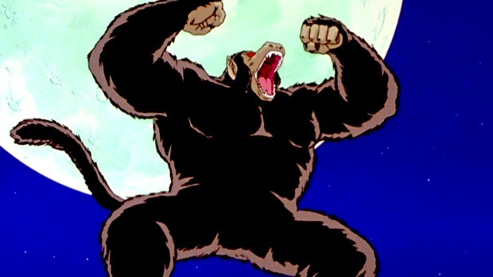
Super Saiyajin :
A primeira vez que Goku se transformou em Super Saiyajin nunca mais vai sair das
nossas
memórias. O personagem atingiu este nível de poder após a morte de Kuririn, esse acontecimento fez com que o
saiyajin ficasse furioso!
Foi graças à transformação Super Saiyajin que Goku conseguiu derrotar o vilão Freeza, durante uma batalha
épica no planeta Namek. Quando transformado em Super Saiyajin o seu cabelo fica loiro e ainda mais
levantado, sendo que os seus olhos mudam de cor para azul.
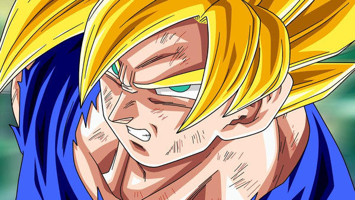
Super Saiyajin de Terceiro Grau:
Esta é a forma avançada da transformação Super Saiyajin, contudo foi
muito pouco
utilizada ao longo da franquia Dragon Ball. Nesta transformação o Saiyajin que a utilizar vê um drástico aumento
do seu nível de poder e a sua massa muscular fica muito mais imponente.
No entanto este aumento de massa muscular faz com que o guerreiro fique muito mais lento, tão lento que apesar
do nível de poder ser mais elevado acaba por fazer com que esta nova forma acabe por não compensar.
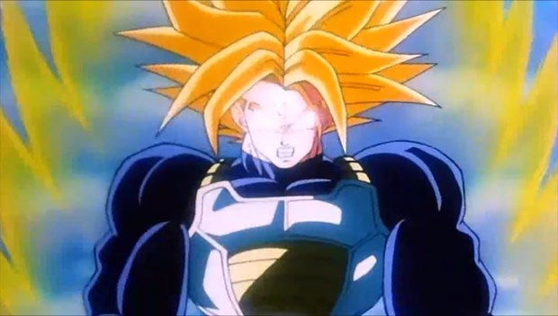
Super Saiyajin 2:
Filho de peixe, peixinho é! Assim como o seu pai, Gohan aprendeu rapidamente a
atingir o nível
de Super Saiyajin, mas o que ninguém estava esperando era que ele fosse capaz de ultrapassar essa transformação
tão depressa.
Durante a batalha contra Cell, Gohan se transformou em Super Saiyajin 2, deixando todo mundo perplexo com a
dimensão de seu poder e com muitos fãs esperando que ele volte a demonstrar todo potencial que revelou durante
essa saga de Dragon Ball Z.
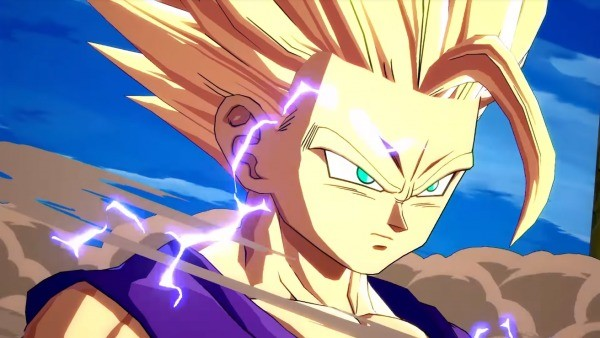
Super Saiyajin 3:
Ainda hoje esta é uma das transformações preferidas dos fãs! Durante o combate com
Majin Boo,
parecia que nenhum guerreiro era suficientemente poderoso para derrotar o vilão cor-de-rosa. Goku surpreendeu a
todos mais uma vez e se transformou no incrível Super Saiyajin 3.
Para além do visual loiro, o personagem ficava ainda com o cabelo extremamente comprido e as suas sobrancelhas
desaparecem por completo.
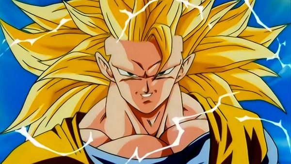
Super Saiyajin Deus:
A primeira vez que Goku atingiu esta transformação foi no filme Dragon Ball Z: A
Batalha dos
Deuses. Na tentativa de chegar perto dos níveis de poder de Bills (o deus da destruição), Goku consegue
desbloquear todo o seu potencial, atingindo uma nova forma.
Aqui o seu cabelo fica da cor vermelha, assim como os seus olhos, contudo nem mesmo este nível de poder foi
suficiente para derrotar o Deus da Destruição, Bills.
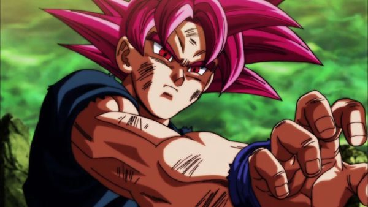
Super Saiyajin Deus Super Saiyajin:
O Freeza deve ter um trauma enorme com o Goku. No filme Dragon Ball
Z: O
Renascimento de Freeza, Goku volta a surpreender todo mundo, desvendando uma nova transformação, desta vez o seu
penteado era semelhante ao do Super Saiyajin 1, contudo a cor do seu cabelo ficou azul.
Basicamente, como o nome indica esta é a versão Super Saiyajin, da forma Super Saiyajin Deus, revelando que
existem diferentes níveis nas novas transformações!
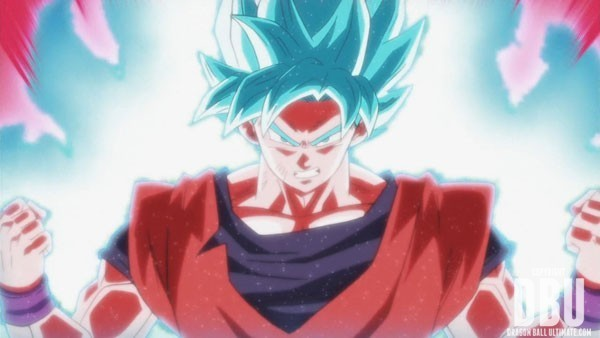
Super Saiyajin Rosé:
Durante a série Dragon Ball Super (a mais recente da franquia), existe um vilão
chamado Goku
Negro. Como o nome indica, este personagem é uma espécie de versão malvada de Goku. Durante um dos episódios ele
atinge uma forma nunca antes vista, a de Super Saiyajin Rosé, sendo capaz de tornar o seu cabelo cor-de-rosa!
Basicamente esta transformação apenas é possível quando um Saiyajin com poder divino se transforma em Super
Saiyajin (algo muito raro).
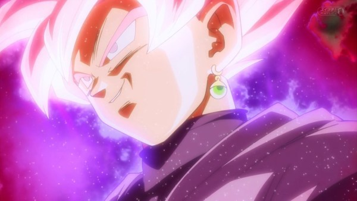
Super Saiyajin Fúria:
Durante a Saga Trunks do "Futuro" tivemos a chance de ver o vilão Goku Black em
ação pela
primeira vez, assim como a transformação Super Saiyajin Rosé. Mas este não foi a única nova transformação desta
saga, pois o Trunks do Futuro foi capaz de atingir o a forma de Super Saiyajin Fúria.
Esta transformação ocorre quando um Saiyajin se deixa levar por niveís de fúria super elevados. Apesar de ser
semelhante à transformação Super Saiyajin, nesta forma podemos ver que os olhos do Saiyajin ficam completamente
brancos, o cabelo ainda mais levantado e uma aura azul surge em seu redor.
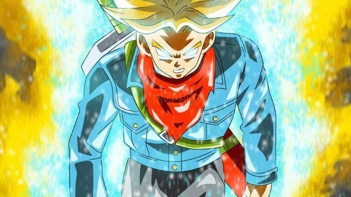
Super Saiyajin Deus Super Saiyajin Evolução:
O Torneio do Poder foi provavelmente um dos arcos mais
emocionantes
de Dragon Ball Super e com ele uma nova transformnação Super Saiyajin foi revelada!
Durante a sua batalha contra Topo, Vegeta deixou todo mundo de boca aberta quando conseguiu alcançar uma forma
que Goku nunca conseguiu, estamos falando da Super Saiyajin Deus Super Saiyajin Evolução. Nesta transformação
Vegeta aumenta em muito o seu nível de poder, o cabelo azul fica um pouco mais escuro (assim como os seus olhos)
e o seu físico fica bem mais imponente!
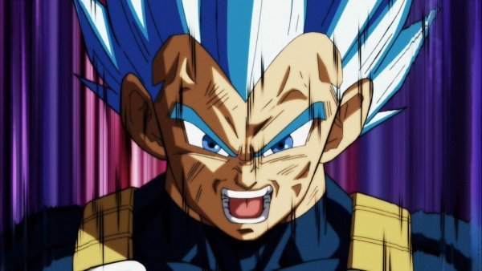
Super Saiyajin Lendário / Broly:
Apesar de não existir unanimidade em relação à identidade do verdadeiro Super
Saiyajin Lendário, estamos confiantes que o primeiro personagem a conseguir atingir esta transformação foi o
Broly. Neste nível, como vimos no filme Dragon Ball Super: Broly, o Saiyajin fica com o seu cabelo ligeiramente
verde e o seu poder é verdadeiramente avassalador!
Para além da mudança na cor de cabelo existe uma evidente alteração do corpo de Broly , que fica com um físico
bem mais imponente!
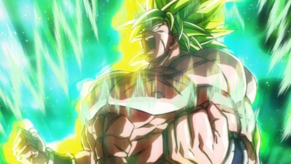